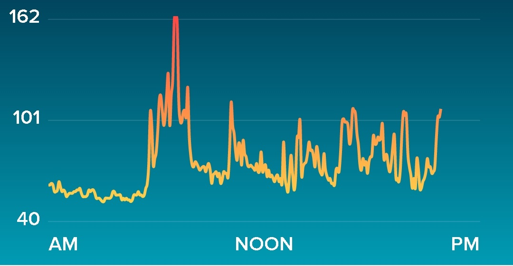

<ion-view view-title="BPM">
  <ion-nav-bar-back-button class="button-clear"><i class="ion-arrow-left-c"></i></ion-nav-bar-back-button>
  <ion-content class="padding">
    
    <ion-item>
      <div class="col col-70 col-offset-70">Resting : <i class="fa fa-heart" aria-hidden="true"></i> 62 bpm</div>

    </ion-item>
    <ion-item>
      <div class="col col-70 col-offset-70">Average : <i class="fa fa-heart" aria-hidden="true"></i> 80 bpm</div>

    </ion-item>
    <ion-item>
      <div class="col col-70 col-offset-70">Highest : <i class="fa fa-heart" aria-hidden="true"></i> 162 bpm</div>

    </ion-item>
  </ion-content>
</ion-view>
